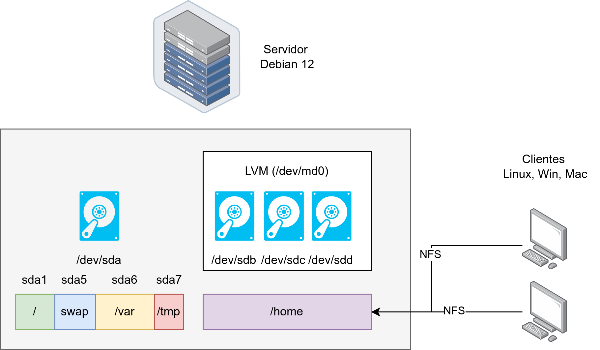

Tema 7: Implementación RAID software y cuotas
Programación y Administración de Sistemas
(2023-2024)
1 Receta
Receta
En esta receta vamos a implementar una configuración típica:
- RAID software para la carpeta
/homepara aumentar tamaño, fiabilidad ante fallos… - Uso de cuotas para restringir el espacio y cantidad de ficheros/directorios por usuarios o grupos.
Esta combinación, junto con el uso de NFS (y obviamente más cosas), es la que tenemos en las aulas de prácticas de la UCO.
Estos pasos y configuración han sido probados en Debian 12.
Esquema

Añadir discos
Necesitarás añadir al menos dos discos duros virtuales en VirtualBox. No necesitan ser formateados previamente. Después de añadirlos, verás algo así:
$ lsblk
NAME MAJ:MIN RM SIZE RO TYPE MOUNTPOINTS
sda 8:0 0 8G 0 disk
├─sda1 8:1 0 3,7G 0 part /
├─sda2 8:2 0 1K 0 part
├─sda5 8:5 0 953M 0 part [SWAP]
├─sda6 8:6 0 1,9G 0 part /var
└─sda7 8:7 0 1,5G 0 part /tmp
sdb 8:16 0 100M 0 disk
sdc 8:32 0 100M 0 disk
sdd 8:48 0 100M 0 disk
sr0 11:0 1 1024M 0 rom 2 RAID software
Herramienta mdadm
La herramienta
mdadmpermite crear o administrar un dispositivo RAID, convertir un disco ``normal’’ en parte de un RAID…Tiene distintos modos de funcionamiento create: configurar y activar sistemas RAID.
/proc/mdstatlista todos los sistemas RAID (dispositivosmd) activos con información sobre su estado.Las particiones que formen el RAID tienen que un flag RAID (Linux raid auto), de esta manera serán detectadas y activadas en el proceso de arranque.
Instalación mdadm
Instalamos la herramienta mdadm y también rsync que nos servirá para la migración de datos.
sudo apt update
sudo apt upgrade
sudo apt install mdadm
sudo apt install rsyncEjemplo de creación de un RAID5
Listar dispositivos RAID previos:
$ cat /proc/mdstat
Personalities : [linear] [multipath] [raid0] [raid1] [raid6] [raid5] [raid4] [raid10]
unused devices: <none>Si existe alguno tendrás que reiniciarlos.
Encontrar los dispositivos sobre los que construiremos el RAID (sdb, sdc y sdd en nuestro caso):
lsblk Salida:
$ lsblk
NAME MAJ:MIN RM SIZE RO TYPE MOUNTPOINTS
sda 8:0 0 8G 0 disk
├─sda1 8:1 0 3,7G 0 part /
├─sda2 8:2 0 1K 0 part
├─sda5 8:5 0 953M 0 part [SWAP]
├─sda6 8:6 0 1,9G 0 part /var
└─sda7 8:7 0 1,5G 0 part /tmp
sdb 8:16 0 100M 0 disk
sdc 8:32 0 100M 0 disk
sdd 8:48 0 100M 0 disk
sr0 11:0 1 1024M 0 rom Vamos a crear el RAID 5:
sudo mdadm --create --verbose /dev/md0 --level=5 --raid-devices=3 /dev/sdb /dev/sdc /dev/sddSalida:
mdadm: layout defaults to left-symmetric
mdadm: layout defaults to left-symmetric
mdadm: chunk size defaults to 512K
mdadm: size set to 100352K
mdadm: Defaulting to version 1.2 metadata
mdadm: array /dev/md0 started.Confirmar que se ha creado:
cat /proc/mdstat
Personalities : [linear] [multipath] [raid0] [raid1] [raid6] [raid5] [raid4] [raid10]
md0 : active raid5 sdd[3] sdc[1] sdb[0]
200704 blocks super 1.2 level 5, 512k chunk, algorithm 2 [3/3] [UUU]
unused devices: <none>Crear un sistema de archivos en el RAID:
sudo mkfs.ext4 -F /dev/md0
mke2fs 1.47.0 (5-Feb-2023)
Creating filesystem with 200704 1k blocks and 50200 inodes
Filesystem UUID: 015bee08-b8b0-4b98-9a7d-b0f205f2ea8d
Superblock backups stored on blocks:
8193, 24577, 40961, 57345, 73729
Allocating group tables: done
Writing inode tables: done
Creating journal (4096 blocks): done
Writing superblocks and filesystem accounting information: done Veamos cómo va nuestro sistema de ficheros:
$ lsblk
NAME MAJ:MIN RM SIZE RO TYPE MOUNTPOINTS
sda 8:0 0 8G 0 disk
├─sda1 8:1 0 3,7G 0 part /
├─sda2 8:2 0 1K 0 part
├─sda5 8:5 0 953M 0 part [SWAP]
├─sda6 8:6 0 1,9G 0 part /var
└─sda7 8:7 0 1,5G 0 part /tmp
sdb 8:16 0 100M 0 disk
└─md0 9:0 0 196M 0 raid5
sdc 8:32 0 100M 0 disk
└─md0 9:0 0 196M 0 raid5
sdd 8:48 0 100M 0 disk
└─md0 9:0 0 196M 0 raid5 A continuación, crear un punto de montaje para montar el nuevo sistema de archivos:
sudo mkdir -p /mnt/md0Puedes montar el sistema de archivos con el siguiente comando:
sudo mount /dev/md0 /mnt/md0Después, comprueba si el nuevo espacio está disponible:
df -h -x devtmpfs -x tmpfsSalida:
S.ficheros Tamaño Usados Disp Uso% Montado en
/dev/sda1 3,6G 1,6G 1,9G 46% /
/dev/sda6 1,8G 275M 1,5G 16% /var
/dev/sda7 1,5G 40K 1,4G 1% /tmp
/dev/md0 179M 14K 165M 1% /mnt/md0Información sobre el estado:
sudo mdadm --detail --scanY saldrá algo así:
ARRAY /dev/md0 metadata=1.2 name=debian:0 UUID=cbb045c1:8b657f24:54e78477:2f05318bPara asegurarnos de que la configuración se aplica en cada inicio y se incluye en el initramfs (ver tema de arranque):
sudo mdadm --detail --scan | sudo tee -a /etc/mdadm/mdadm.conf
sudo update-initramfs -uFinalmente añadimos el punto de montaje nuevo:
echo '/dev/md0 /mnt/md0 ext4 defaults 0 0' | sudo tee -a /etc/fstabReinicia y comprueba que el sistema de ficheros está montado y el espacio esperado con df.
Nuevo /home
Idealmente el /home se montaría sobre un RAID1 o RAID5 (mínimo 3 discos):
- RAID1:
--level=1 --raid-devices=2 - RAID5:
--level=5 --raid-devices=3
Migración al /home
¿Cómo migraríamos y usaríamos este volumen como /home?:
Para reemplazar el /home, una vez listo todo lo anterior, tendrás que:
- Poner el sistema en modo monousuario de forma programada y avisando previamente a usuarios.
sudo systemctl isolate rescue.target- Montar el sistema nuevo (si no lo tenías ya montado):
sudo mount /dev/md0 /mnt/md0- Copiar todo el contenido de la partición antigua a la nueva. Por ejemplo con
rsync. Es importante poner la barra al final de las rutas para no crear una carpetahomedentro demd0:
sudo rsync -avr /home/ /mnt/md0/- Eliminar anterior partición (renombramos en vez de eliminar por precaución):
sudo mv /home /home-old
sudo umount /mnt/md0
sudo mkdir -p /homeNota. Si /home ya era una partición bastará con desmontarla.
Puede que tengamos que expulsar usuarios o procesos.
- Añadir nueva línea en
/etc/fstab:
/dev/md0 /home ext4 defaults 0 2- Aplicar cambios con:
sudo mount -aComprobar que los datos están en su sitio.
Volver a modo multiusuario (o reiniciar):
sudo systemctl isolate multi-user.target- Si todo ha ido bien debes tener una salida así:
$ df -h -x devtmpfs -x tmpfs
S.ficheros Tamaño Usados Disp Uso% Montado en
/dev/sda1 3,6G 1,6G 1,9G 46% /
/dev/sda6 1,8G 275M 1,5G 16% /var
/dev/sda7 1,5G 40K 1,4G 1% /tmp
/dev/md0 179M 24M 141M 15% /home- Puedes añadir discos de repuesto con (
spare) con:mdadm /dev/md0 -a /dev/DISCO
3 Cuotas
En cualquier entorno multiusuario necesitaremos limitar recursos por usuario para dimensionar recursos y para evitar problemas de seguridad o rendimiento.
Imaginemos que un usuario almacena más información de la que cabe en un sistema de ficheros:
$ fallocate --length 200MB ~/fichero
fallocate: fallocate ha fallado: No queda espacio en el dispositivo
$ df -h /home
S.ficheros Tamaño Usados Disp Uso% Montado en
/dev/md0 179M 165M 0 100% /home¿Cómo podríamos evitar este problema?
Activar las cuotas en el sistema de ficheros
Pasos a realizar para establecer las cuotas de disco:
- Instalar las utilidades de cuota:
sudo apt-get install quota- Opcional. En algunas imágenes de servidores virtuales Ubuntu puede no estar disponible el módulo del kernel y será necesario instalar:
sudo apt install linux-image-extra-virtual- Activar opción de quota a nivel de sistema de ficheros. En versiones antiguas de ext4 y anteriores era una opción en fstab y aún muchos tutoriales lo indican así. Como root:
sudo systemctl isolate rescue.target
umount /homeCon el sistema de ficheros desmontado:
umount /home
tune2fs -O quota /dev/md0
mount /homeNota: al crear el sistema de ficheros se podría haber activado la cuota (mkfs ... -O quota ...)
Activar cuotas de disco
- Activar la cuotas en el sistema de ficheros. Este comando crea los archivos
/home/aquota.usery/home/aquota.groupque contienen información sobre los límites y el uso del sistema de archivos, y deben existir antes de activar la supervisión de cuotas.
# -u cuotas usuario
# -g activaría las de grupo
sudo quotaon -vug /home
# Podemos desactivar con
sudo quotaoff -vugquotaon: añade el contenido de los ficheros de control de cuotas.
v: verbose.
u: cuotas para usuarios.
g: cuotas para grupos.
a: activa cuotas en todos los dispositivos.
Establecer cuotas de disco
- Fijar la cuota del usuario pas a 50MB de límite blando y 60MB de límite duro. No hay límte en número de archivos/directorios (inodos) creados :
sudo setquota -u pas 50M 60M 0 0 /home- O alternativamente con
edquotaque abre un editor de texto (tendrás que especificar el tamaño en Ks). La columnablocksyinodesinforma de cuántos bloques e inodos están en uso respectivamente y puede confundir, ya que mezcla información del sistema con el fichero de configuración.
sudo edquota pasDisk quotas for user pas (uid 1000):
Filesystem blocks soft hard inodes soft hard
/dev/md0 24423 51200 51200 21392 0 0Nota: El concepto de bloque no está bien especificado y puede cambiar dependiendo de muchos factores, incluyendo la herramienta de línea de comandos que los esté proporcionando. En el contexto de cuotas en Ubuntu y Debian, es bastante seguro asumir que 1 bloque equivale a 1 kilobyte de espacio en disco.
Periodo de gracia
- Establecer el periodo de gracia (tiempo en el que se puede superar el límite blando):
edquota -t
Grace period before enforcing soft limits for users:
Time units may be: days, hours, minutes, or seconds
Filesystem Block grace period Inode grace period
/dev/md0 7days 7daysCopiar cuotas:
edquota -up pas usuarioEstadísticas de las cuotas:
repquota /dev/md0(-smuestra información en formato entendible por personas)
$ sudo repquota -s /dev/md0
*** Report for user quotas on device /dev/md0
Block grace time: 7days; Inode grace time: 7days
Space limits File limits
User used soft hard grace used soft hard grace
----------------------------------------------------------------------
root -- 27K 0K 0K 4 0 0
pas -- 24423K 51200K 51200K 21392 0 0 - Probemos nuestro caso de agotar el espacio.
$ fallocate --length 200MB ~/fichero
md0: write failed, user block limit reached.
md0: write failed, user block limit reached.
md0: write failed, user block limit reached.
...
$ df -h /home
S.ficheros Tamaño Usados Disp Uso% Montado en
/dev/md0 179M 51M 115M 31% /homeReferencias
Debian 12 Bookworm Set Disk Quota https://www.server-world.info/en/note?os=Debian_12&p=quota
How To Create RAID Arrays with mdadm on Ubuntu 22.04 https://www.digitalocean.com/community/tutorials/how-to-create-raid-arrays-with-mdadm-on-ubuntu-22-04
How To Set Filesystem Quotas on Ubuntu 20.04 https://www.digitalocean.com/community/tutorials/how-to-set-filesystem-quotas-on-ubuntu-20-04